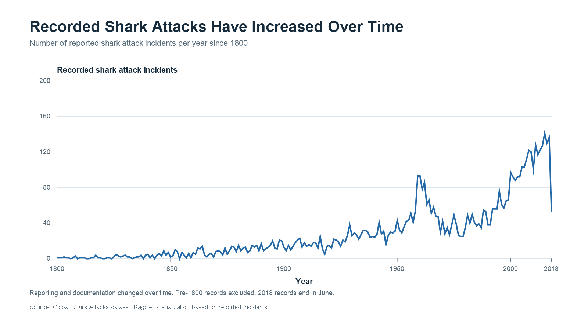

01 · THE SURFACE
Shark attacks appear
to be increasing.
The historical record contains far more reported encounters in its later years than it did two centuries ago.

Far more encounters appear
in recent decades of the record.